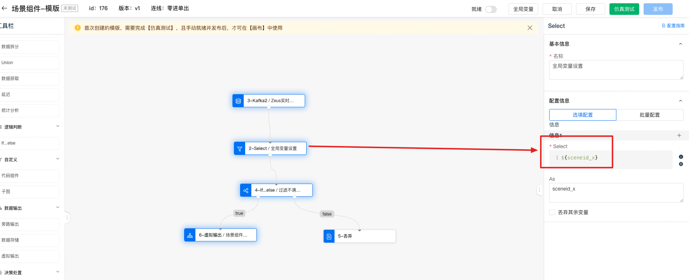
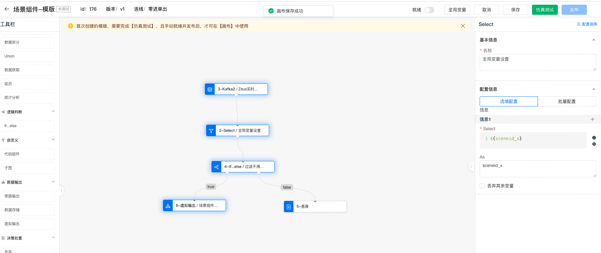

说明：全局变量
一、背景
生产者在自定义组件的逻辑编排时存在一些全局通用参数，需要使用的用户进行设定，这类信息可在自定义组件中设置成全局变量。使用者，在应用自定义组是会设定变量的具体值。
二、名词解释
无
三、操作详情
|
配置说明
|
截图
|
|
【全局变量设置】
- 若画布中设置了全局变量，则点击全局变量按钮，平台自动解析已经设置的全局变量。若需要进行其他信息设置则点击编辑按钮，默认展示详情信息
-
如何在自定义组件中设置全局变量？
在自定义组件中基础组件输入框内按照${XXX} 格式书写，自定义组件会将XXX识别为全局变量。
- 建议用户以select组件进行全局变量集中设置，这样后续全局变量的管理和查询也方便。比如select ${sceneid_b} as sceneid_b ,这样在后续若作更多逻辑判断可以直接使用sceneid_b这个参数。
- 当画布引用组件执行的时候，使用者设定sceneid_b=1154 则 自定义组件内部所有sceneid_b 都会替换成1154
-
全局变量的英文名称、类型为平台自动解析。中文名称、填写方式、填写样式、是否可选和默认提示文案 为用户自定义。
- 其中全局变量的中文名称 是使用者在画布中填写全局变量的标题，建议名称简明扼要，不要过5个中文。
- 类型：支持整型、字符串、布尔型等@葛磊幸苦帮忙确认下
- 填写方式：当前仅支持输入框，后续计划支持下拉框
- 填写样式：输入框下，可支持短文本、长文本和表达式代码
- 是否可选：默认否，都是必须填写；支持生产者设定可选
- 默认提示文案：即在使用者应用时，输入框内的默认提示文案是什么，为了降低沟通成本提示自定义组件的易用性，建议生产者在此处做好填写描述。
- 设置完成后点击保存，即可保存全局变量设置。⚠️整个自定义组件保存才能完成整体的保存，因此不要忘记保存全局变量和自定义组件逻辑，即页面右上角的保存
|




|
四、FAQ
Q1：已经发布的自定义组件，增加/删除全局变量怎么操作
A：本期202311月版本，暂无法支持已经发布的自定义组件直接修改进行增加/删除全局变量。当前可实现逻辑为复制一个相同的自定义组件重新设定并在画布中替换引用。预计二期会以版本升级方式支持降低替换成本。但需要注意 增加全局变量若是必填信息 仍需要引用的画布进行设定才可使用，因此跟建议新建方式。
Q2：已经设置的全局变量类型/XX有问题，怎么调整
A：
Q3：全局变量可以跨自定义组件使用么？
A：不可以，全局变量独属于设置的自定义组件，其含义和逻辑都只有在本自定义组件中生效。不同的自定义组件即使设置变量名称相同但处理逻辑也是不同的。
Q4：全局变量在画布中的填写信息可以支持表达式书写么？
A：本期202311月版本暂时不支持，二期迭代计划支持，敬请期待。